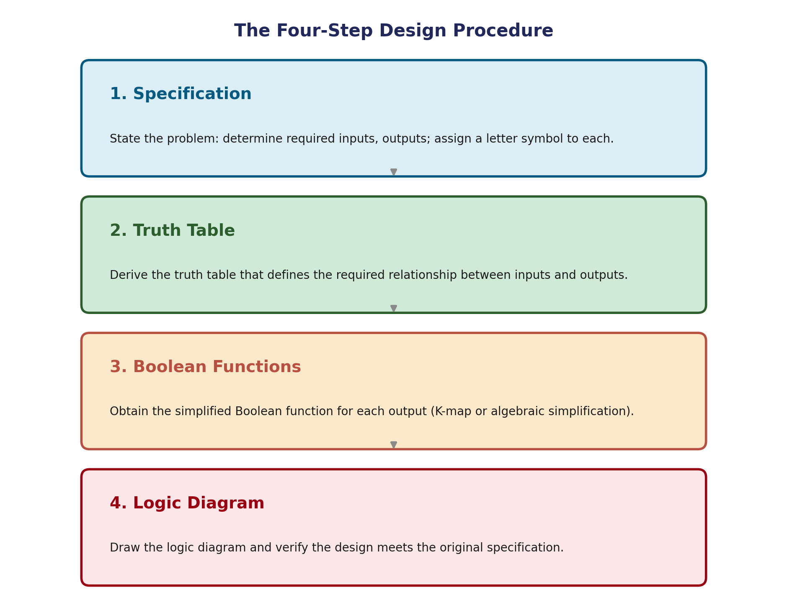

Combinational Circuits: Analysis & Design Procedure
Unit 1 built the vocabulary — bits, gates, Boolean algebra, K-maps. Unit 2 is where that vocabulary starts building actual functional circuits: adders, comparators, decoders, encoders, multiplexers — the components every digital system, including the CPU you'll study later in this course, is assembled from. This page covers the two procedures that tie everything together: how to take an existing circuit and figure out what it does (analysis), and how to start from a requirement and build a circuit that satisfies it (design).
What Makes a Circuit "Combinational"
A combinational circuit is an interconnection of logic gates whose output values, at any instant, depend only on the present combination of input values — never on what the inputs were doing a moment ago. Feed the same inputs in twice, at different times, and you always get the same outputs.
For n input variables, there are 2ⁿ possible input combinations, and for each one, the circuit produces exactly one output combination — which is precisely why a truth table can fully specify a combinational circuit's behavior, and why every combinational circuit can equally be described by a set of Boolean functions, one per output.
Analysis Procedure
Analysis starts with a logic diagram already drawn, and works backward to a mathematical description — a truth table or a set of Boolean expressions — of what the circuit actually computes.
The general approach:
- Label every gate output with an intermediate variable name, working from the inputs toward the final outputs.
- Write the Boolean expression for each labeled signal, building up from the inputs through each layer of gates.
- Substitute through until each final output is expressed purely in terms of the original input variables.
- Tabulate — build the truth table by evaluating the final expressions for all 2ⁿ input combinations, if a table is what's needed.
Worked Example — Analyzing a Small Circuit
Take a circuit with two inputs A, B, one NOT gate on A feeding an AND gate (giving A′B), one NOT gate on B feeding a second AND gate (giving AB′), and a final OR gate combining those two AND outputs.
F = A′B + AB′
Evaluating this at all four input combinations:
| A | B | A′B | AB′ | F = A′B + AB′ |
|---|---|---|---|---|
| 0 | 0 | 0 | 0 | 0 |
| 0 | 1 | 1 | 0 | 1 |
| 1 | 0 | 0 | 1 | 1 |
| 1 | 1 | 0 | 0 | 0 |
This is worth recognizing immediately: F is 1 exactly when A and B differ — this circuit is an XOR gate, built entirely from AND, OR, and NOT. Spotting patterns like this (a multi-gate circuit turning out to be a familiar single function) is a routine, valuable part of analysis.
Design Procedure
Design runs the opposite direction: starting from a word-description of what's needed, and ending with a working logic diagram.
- Specification. State the problem precisely. Determine the required number of inputs and outputs, and assign a letter symbol to each.
- Truth table. Derive the truth table that defines the exact required relationship between every input combination and its corresponding output(s).
- Simplify. Obtain the simplified Boolean function for each output, as a function of the input variables — using K-maps (from Unit 1) or algebraic manipulation.
- Draw and verify. Draw the logic diagram from the simplified expressions, and check it against the original specification — ideally by re-deriving the truth table from the diagram and confirming it matches step 2.


Worked Example — Full Design Cycle
Specification: design a circuit with two inputs A, B that outputs 1 whenever exactly one of the two inputs is 1 (this is deliberately the same function analyzed above, so you can compare the two directions of the process directly).
Step 1 — Specification: two inputs (A, B), one output (F). F = 1 when exactly one input is 1.
Step 2 — Truth table:
| A | B | F |
|---|---|---|
| 0 | 0 | 0 |
| 0 | 1 | 1 |
| 1 | 0 | 1 |
| 1 | 1 | 0 |
Step 3 — Simplify: reading the 1-rows directly gives the canonical sum: F = A′B + AB′. With only two variables and two minterms that aren't adjacent on a K-map (no simplification possible — they sit diagonally opposite), this is already the minimal SOP form.
Step 4 — Draw and verify: two NOT gates, two 2-input AND gates, one 2-input OR gate — exactly the circuit analyzed in the previous section. Re-deriving its truth table (already done above) confirms it matches step 2 exactly. Design cycle complete.
Common Pitfalls
- A truth table isn't complete until every input combination is assigned an output — leaving rows unspecified makes the circuit's behavior ambiguous for those inputs, unless they're explicitly marked as don't-cares.
- Skipping the re-derivation in step 4 is a common shortcut that hides algebra mistakes — a slip in Boolean simplification can produce a circuit that looks correct on paper but doesn't actually implement the specification.
- Identical truth tables always mean functionally equivalent circuits — even if the gate count, gate types, or internal wiring are completely different. Don't assume two different-looking diagrams must compute different functions.
Applications
- Every circuit on the remaining pages of this unit — adders, comparators, decoders, encoders, multiplexers — is a direct product of this exact four-step design procedure, just with more inputs, more outputs, and more involved simplification.
- Circuit verification and debugging in real hardware design relies on the analysis procedure — given an unfamiliar circuit (perhaps inherited from someone else, or reverse-engineered from a chip), analysis is how you determine what it actually does.
- Hardware description languages (Verilog, VHDL) let engineers skip drawing the gate-level diagram by hand, but the underlying logic — specification → truth table or equations → simplified logic — is exactly what the compiler/synthesis tool does automatically underneath.